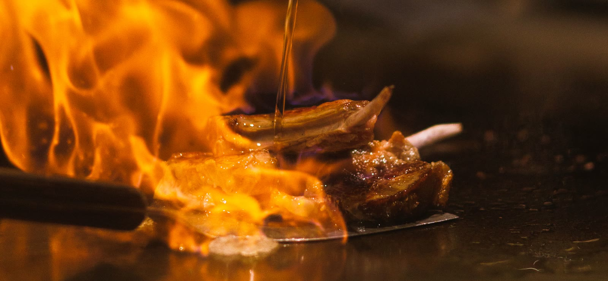

The Menu
Exceptional Flavors




The Menu

Kitchen & Counter
The counter changes with the market, so the omakase is written the morning it is served. Everything else below is on every night.
Nine Courses
KES 12,500
Seasonal sashimi, two hot plates, eight pieces of nigiri and a dessert. About two hours.
Fifteen Courses
KES 19,500
The full counter, cooked in front of you and paced to the room. Best taken early.
Wagyu Omakase
KES 24,000
Fifteen courses built around A5, finished on the teppan. Two guests minimum.
Sake Pairing
KES 7,500
Five pours chosen against the menu on the night, poured as each course lands.
Otoro Nigiri
KES 2,400
Salmon Nigiri
KES 950
Yellowtail Sashimi
KES 1,850
Ikura Gunkan
KES 1,200
Chirashi Bowl
KES 3,600
Sashimi Moriawase
KES 5,200
Wagyu A5
KES 8,900
Lobster Tail
KES 6,400
Hokkaido Scallops
KES 3,800
Black Cod
KES 4,200
Garlic Rice
KES 1,100
Market Vegetables
KES 1,400
Edamame, Sea Salt
KES 700
Agedashi Tofu
KES 1,150
Pork Gyoza
KES 1,300
Chicken Karaage
KES 1,450
Miso Soup
KES 650
Matcha Mochi
KES 950
Yuzu Sorbet
KES 850
Black Sesame Custard
KES 1,050
Hojicha Ice Cream
KES 800
Junmai Daiginjo, glass
KES 1,800
Nigori, glass
KES 1,400
Sake Flight, three
KES 3,200
Japanese Whisky, measure
KES 2,600

Reserve
A counter, a season, and a chef who decides the order. Tell us when you would like to sit and how many are coming — the evening is arranged from there.
Reserve nowOpens WhatsApp · message already written